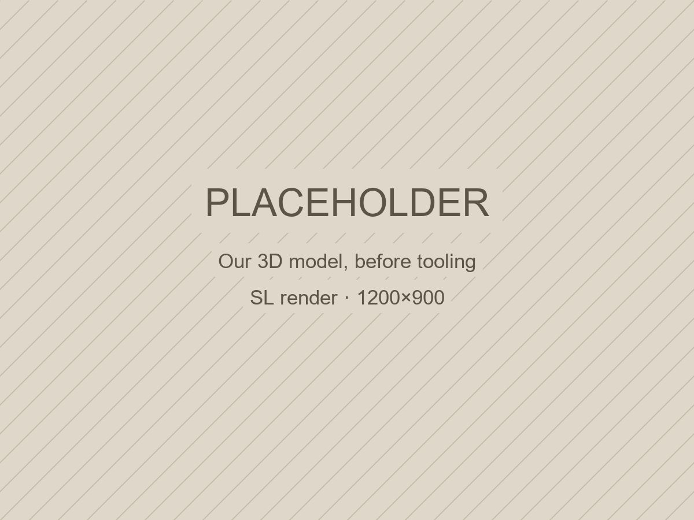

The making of a wall
The architect brought a reference image of a coursed relief wall. We traced its profile, rebuilt it as two masters and hand-cast the plates in Sapanca.
Image: design stage, first model, before the architect's revision

- Architect
- Tufetto Mimari
- Place
- A private residence in Istanbul
- Wall
- about 1.9 × 2.6 m
- Pieces
- 28 cast plates, 7 courses: six full, one at the ceiling cut to 200 mm
- Plate
- 600 × 400 mm, profile up to 40 mm deep
- Moulds
- 2 moulds, each laid straight and turned 180°
- Material
- Lumina PMAG™
- Installed
- October 2026
The start
Tufetto Mimari were finishing a living room and had one image in mind: a wall built up in courses, each block cut with coves that hold a shadow when the light comes from the side. They had a reference image, not a drawing.
From image to profile
We looked for a repeat in the reference and found none: the wall reads as hand-laid ashlar, every block slightly different. So we traced the crest lines of two courses and rebuilt the profile by rule. Every face is either flat or a cove, and no cove runs deeper than 40 mm.
Two 600 × 400 mm masters carry the whole wall. Each is laid straight or turned 180°, which gives four different blocks from two moulds, and a running bond places them so no repeat shows to the eye.
The architect’s revision
The architect approved a render of the model and asked for one revision before anything was cast: one of the flat faces should be wider. We took the difference from the neighbouring coves so the plate stayed at 600 mm, and only then moved on to the moulds.
Mould and cast
Silicone moulds were taken from the two masters. We hand-cast the Lumina PMAG™ plates in Sapanca in October, each one set aside for its place in the numbered laying plan.
Installation
The wall went up course by course to the numbered plan, in a private residence in Istanbul on 20 October 2026.
Have a reference image, a sketch or a drawing of your own? Send it.
Send your drawing